9. Viaje por Castilla la Vieja
8 de abril al 14 de abril 2022
Día 2, ver Valladolid en 1 día
9 de abril


Valladolid es la ciudad más poblada y capital de Castilla y León. Es una ciudad fundada en torno al año 1000 d.c. Ha sido capital de España durante 6 años en el reinado de Felipe III, que será cuando más importancia política tenga en España. Además surgirá en la ciudad numerosos palacios debido al traslado de parte de la nobleza que se encontraba en Toledo y Madrid. Desde ese período su importancia respecto a León, ciudad con mucho más historia a lo largo de los años crecerá.
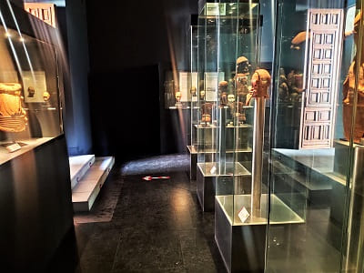
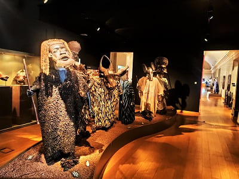
El primer punto desde el que ver Valladolid fue el Palacio de Santa Cruz. Este palacio fue mandado edificar por el cardenal Pedro González de Mendoza en el siglo XV. Es de estilo renacentista y fue proyectado para ser un colegio mayor de enseñanza. Actualmente es la sede del rectorado de la universidad. Su fachada tiene escudos nobiliarios que delata los fundadores, con el Ave María Gratia Plena de los duques del Infantado de Guadalajara del que Pedro Mendoza es descendiente. El patio es de estilo renacentista, de los primeros de toda España. Alberga la sala rectoral donde aparecen pinturas de todos los rectores desde el siglo XX que es cuando tuvo ese papel. Además contiene una capilla y un museo en su interior. El museo tiene una de las colecciones más grandes en España sobre el reino de Oku (Camerún), distribuido en tres diferentes salas. Una exposición de guerreros Terracota del siglo XX, una de bienes de comercio y una de vestimentas y documentos antiguos.

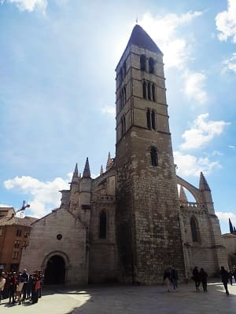
Muy cerca del palacio esta la sede de la universidad bajo un edificio con una fachada barroca muy recargada.
Después de ver este palacio continuaría visitando el centro,
la Catedral de Nuestra Señora de la Asunción, también llamada
Catedral Nueva. Esta catedral que cuando la visite era gratuita es de las más pobres de las catedrales españolas, sin embargo las dimensiones son muy grandes. Posee columnas muy gruesas para soportar el techo que se eleva muy arriba. El interior es muy oscuro sin apenas vidrieras laterales. Tiene varios retablos y varias capillas, algunas con rejas algo elaboradas. Debido a problemas con los arquitectos y al presupuesto durante varios siglos no se termino, teniendo estilos de varias épocas. En sus sitio existieron colegiatas románicas con anterioridad.
Muy cerca se encuentra
la iglesia de Santa María la Antigua, también apodada como
la vieja catedral. Al contrario que la nueva esta si que estuvo terminada y lucía bien hace cinco siglos pero debido al abandono se declaro en ruina y tuvo que ser reconstruida de manera diferente. Posiblemente date del siglo XI inicialmente románica y llevo el título de colegiata antes de que se lo dieran al templo que hoy es catedral. De los elementos románicos solo se salvo la torre que se restauro y el ábside.
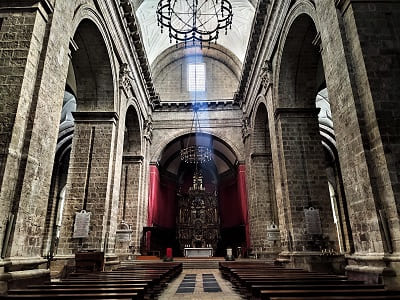
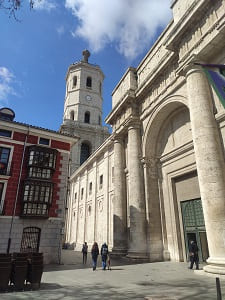
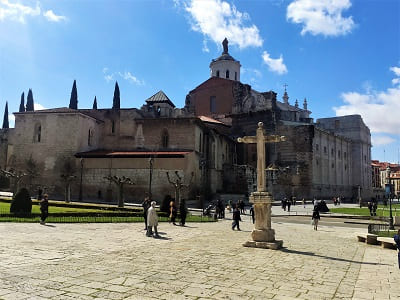
Siguiendo con los edificios religiosos vería
la iglesia de las Angustias y la de san Martín, ambas con retablos barrocos y un estilo interior de los últimos dos siglos.
La iglesia de San Martín nació como ermita en el año 1148, y debido al crecimiento de su barrio, pronto alcanzó la condición de parroquia. Destaca por su torre campanario, gótica con arcos apuntados, que data del siglo xiii, tomando como modelo la de la iglesia de Santa María de La Antigua y actualizándola, pues el ajimez que ésta presenta en su segundo cuerpo se transforma aquí en una ventana amainelada parecida a las del claristorio de la catedral de Burgos y las molduras siguen también formas ya góticas. En 1588 se demolería por lo que el edificio que se ve s ya de finales del siglo XVI.
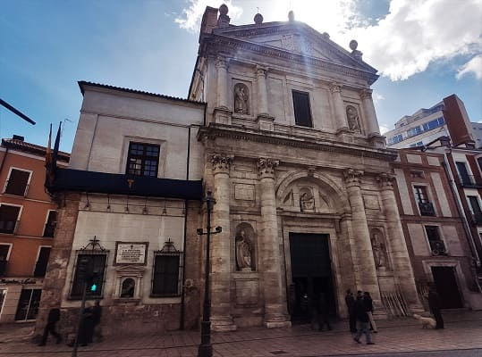
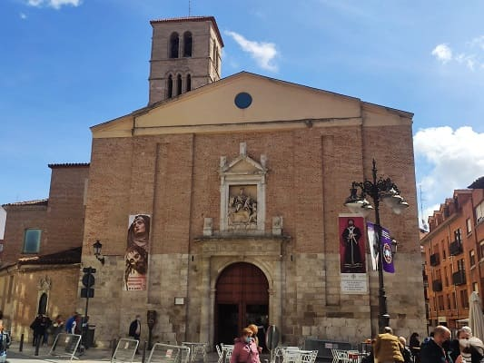
Y por último
la iglesia de san Pablo, parte del antiguo convento de san Pablo, una joya del renacimiento español, con una fachada más de un palacio que una iglesia. Numerosos detalles como escudos de armas o tallas de los apóstoles componen la estampa. Por dentro tiene capillas con decoración muy recargada donde estuvieron instalados grandes nobles de Castilla. El techo esta decorado con escudos de armas y un estilo gótico tardío muy elaborado. El retablo central y muchos elementos se perderían en diversos robos al templo durante la invasión francesa y la desamortización de Mendizabal en el siglo XIX.
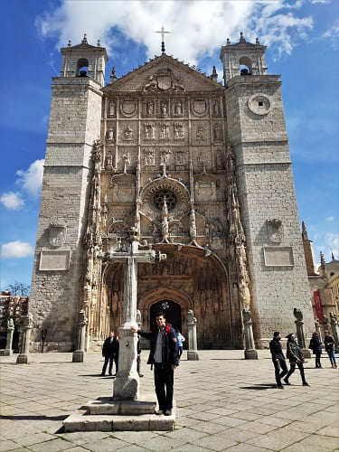
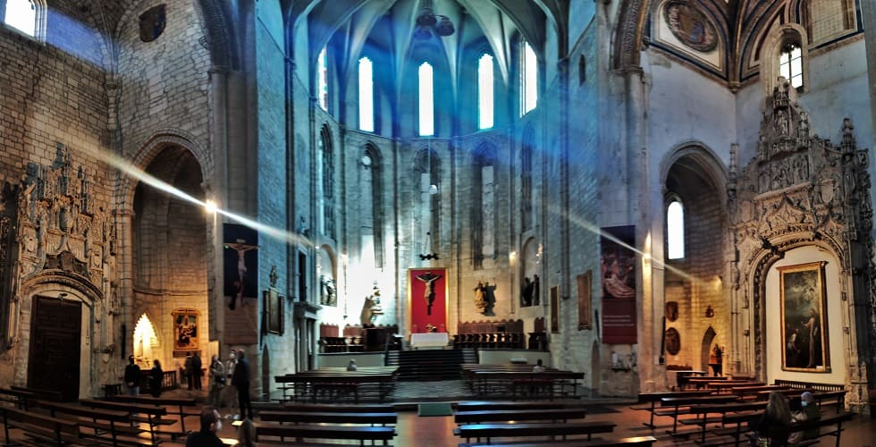
Muy cerca se encuentra
el palacio de Villena que contiene uno de los belenes más conocidos y bonitos de España, de estilo napolitano con figuras que superan los 10 cm de altura.
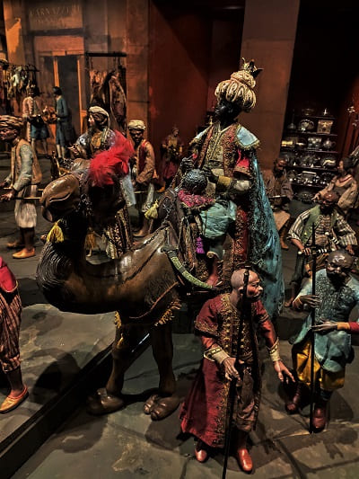
Otro palacio destacado es
el palacio de Pimentel, que lleva en la azulejería la historia de Felipe II, el cual nació en ese palacio y acabaría dándole un papel destacado. Su hijo la establecería como capital de España.
Se organiza en torno a un patio, como es natural en la arquitectura doméstica vallisoletana de su época. Al patio se accede mediante un zaguán, que comunica con la calle mediante una portada tardogótica de arco rebajado. Por el exterior, lo más importante es su famosa ventana plateresca, de comienzos del siglo XVI, que se encuentra en la esquina.
La leyenda cuenta que por una de las ventanas del palacio, de la que cuelga una cadena, fue sacado el rey Felipe II al nacer para que fuera bautizado en la Iglesia de San Pablo, pues de salir por la puerta del palacio debería haber sido bautizado en la cercana Parroquia de San Martín. Sin embargo, parece ser que la leyenda es una deformación de los hechos reales: para el bautizo de Felipe II se construyó un pasadizo elevado entre la iglesia de San Pablo y el palacio para que la familia real discurriese por él sin pisar la calle. Al estar elevado el pasadizo, se usó como salida del palacio una de las ventanas, sin que sepamos con certeza cuál pudo ser.
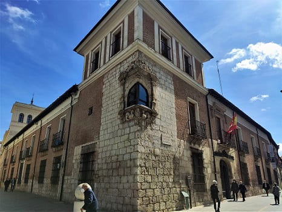
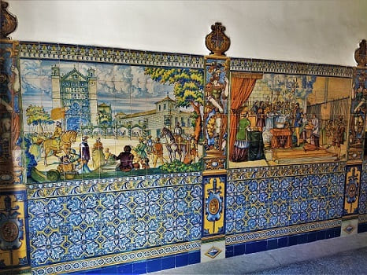
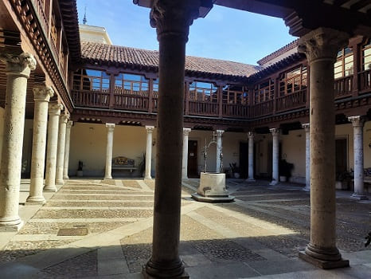
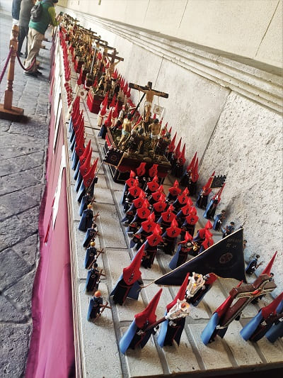
Por último, el palacio sin duda más importante es el palacio Real, que funciona como capitanía general del Ejército Español.
A pesar de que los reyes estaban presentes en Valladolid a menudo, no contaban con un Palacio Real. Cuando la Corte se asienta en esta ciudad, el palacio de Francisco de los Cobos cumplirá esa función. Hasta entonces residían en casas de nobles, con los que les unían lazos de amistad.
En el se realizan exposiciones, como el de semana santa cuando estuve, donde estaban representadas a modo de Belén todas las cofradías de Valladolid mediante figuritas de playmobil.
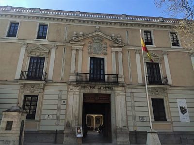
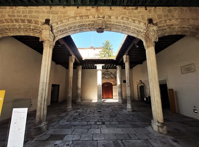
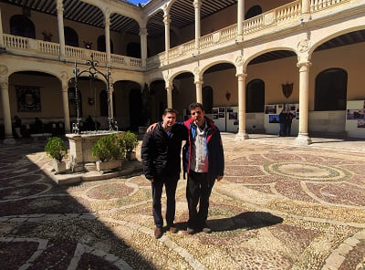
Al lado se encuentra
La Plaza Mayor de Valladolid con una disposición del siglo XVII que recuerda a la plaza Mayor de Madrid que fue eregida también en tiempos de Felipe III.

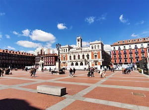
Cerca esta la plaza Zorrilla donde esta el gran edificio de la academia de Caballería.
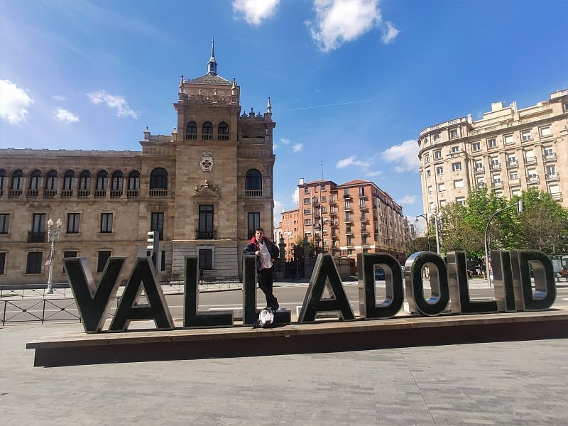
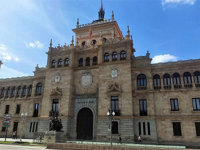
Cerca la
calle Acera de Recoletos donde se encuentran las mejores tiendas y restaurantes de Valladolid. Es conocida como la milla de oro y tiene algunos edificios modernistas destacados. Aprovecharía para comer por esa zona uno de los mejores lechazos de la ciudad en el conocido restaurante Figon.
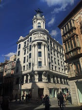
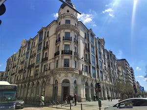
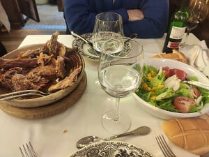
Después de comer pasearía por las calles del casco histórico, pasando por edificios como la iglesia de San Benito, que tras diferentes desamortizaciones perdería el esplendor que tuvo con sus numerosos retablos y grandes pinturas. Hoy gran parte de ellas se encuentran en el museo de Escultura que visitaría después. También merece la pena destacar diferentes palacios como
el palacio de Fabio Nelli, hoy museo o como
el palacio de los Condes de Benavente hoy utilizado como biblioteca de Valladolid. También se encuentra cerca
el palacio de Vivero convertido en el
archivo histórico.
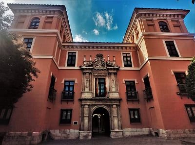
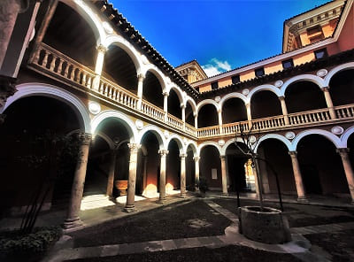
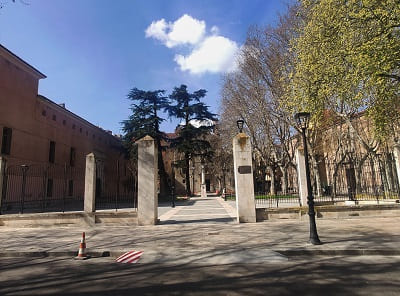
Ya por la tarde visitaría
el Museo de Escultura Nacional cuyo edificio es una joya renacentista del siglo XV. Fue eregido como Colegio de San Gregorio y contiene es escudo de Isabel La Católica. Es incluso anterior a la fachada del palacio de Santa Cruz. Desde 1933 funciona como museo y no como colegio. En el están las mejores esculturas de todo el territorio español, retablos de iglesias o conventos cedidos bien por desamortización o bien porque estaban en depósitos sin exhibirse sus obras. También techumbres de palacios o iglesias y pinturas.
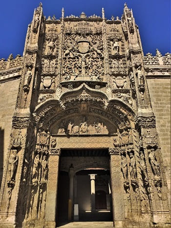
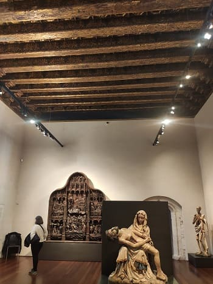
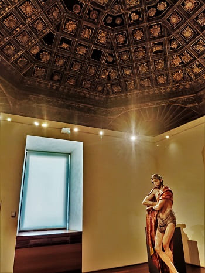
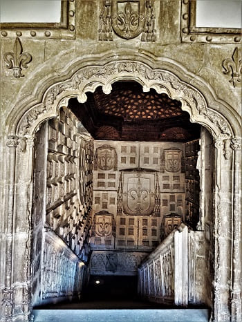
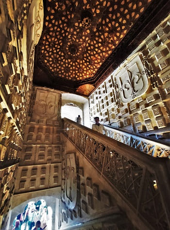
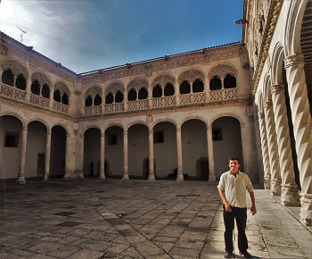
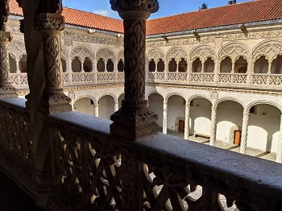
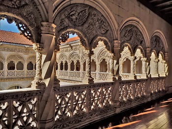
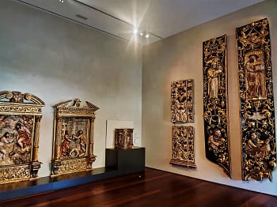
Después de ver este museo pondría rumbo a
Simancas, muy cerca de Valladolid. Este pueblo es conocido porque en el se encuentra el archivo Histórico de Valladolid. Este edificio que ha funcionado como cárcel o deposito de monedas o documentos hoy en día es Archivo Histórico y sólo es visitable por investigadores.
Otros lugares de interés son la plaza Mayor del pueblo, en la imagen, la iglesia de El Salvador de estilo gótico y el gran puente medieval que lo cruza de más de 20 arcos sobre el río Pisuerga.
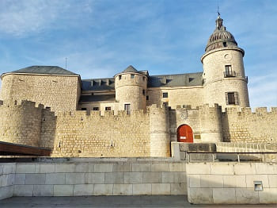
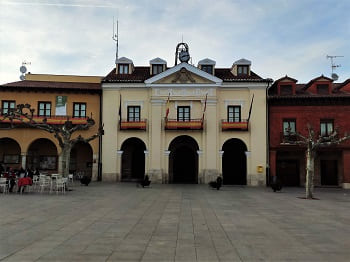
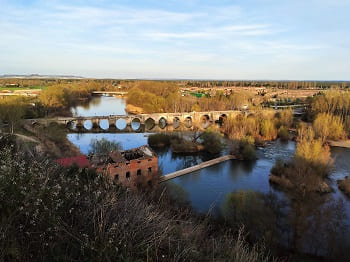
Catedral Santa María La Antigua y museo Nacional de Escultura.
3
Archivo General de Simancas, s.XVI y iglesia de El Salvador, s.XVI.
4
Día 3, conocer los pueblos de la provincia de Valladolid (CLICK para continuar)
10 de abril de 2022

![[Valid RSS]](https://www.onepointsync.com/wp-content/uploads/2016/08/valid-rss-rogers.png "Validate my RSS feed")